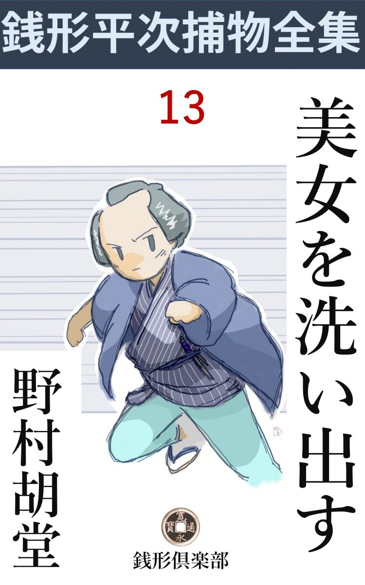
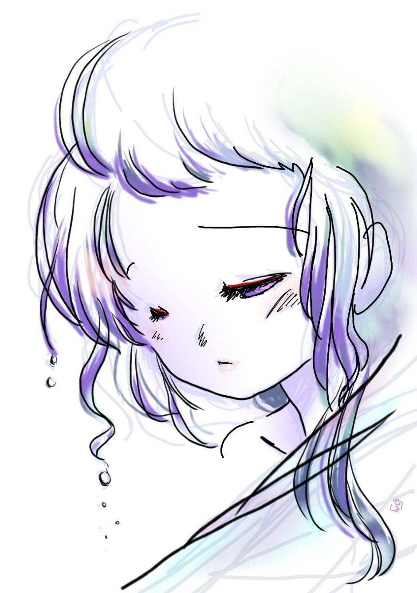

| 美女を洗い出す: 銭形平次捕物全集第13話 (銭形倶楽部) | |
| 野村胡堂 | |
| ZENIGATA CLUB (2018) | |

一
芝三島町の学寮の角で、土地の遊び人疾風 の綱吉というのが殺されました。桜に早い三月の初め、死体は朝日に曝 されて、道端の下水の中に転げ込んでいたのを、町内の人達が見付けて大騒ぎになったのでした。
傷というのは、伊達 の素袷の背後から、牛の角突きに一箇所だけ、左の肩胛骨 の下のあたり、狙ったように心臓へかけてやられたのですから、大の男でも一たまりもなかったでしょう。刺された拍子に転げ込んだものと見えて、下水の中は蘇芳 を流したようになっております。
この辺の縄張りは、柴井町の友次郎という御用聞、二足の草鞋 を穿いているという悪評もありますが、先ず顔の通った四十男。早速駆け付けて、役人の検屍 の前に、一と通り、急所急所に目を通しました。
「親分、ひどい事になったものですね」
「お、八五郎か。銭形の仕込みで大層鼻が良いな」
「からかっちゃいけません。まだこの死体を見付けてから、半刻 と経たないって言うじゃありませんか。いくら鼻がよくたって、神田から駆け付ける暇なんかありゃしません」
「じゃ品川の帰りって寸法かい」
友次郎はどこまでからかい面 だかわかりません。
「飛んでもない、川崎の大師様へ日帰りのつもりで、宇田川町を通るとこの騒ぎでしょう」
「成程ね。そこで、俺の間抜けなところを見て笑ってやろうと言う廻り合せになったんだね。まア、宜いやな。この通りの始末だ。種も仕掛けもねえ、よく見てやってくんな」
友次郎の妙に絡 んだ物言いが癪 に障らないではありませんが、ガラッ八とは貫禄が違いますから、腹を立てたところで、喧嘩にも角力 にもなるわけではありません。
「殺されたのは、疾風 の綱吉だって言うじゃありませんか」
「そうだよ。可哀そうに、後ろ傷で往生しちゃ綱の野郎も浮ばれめえ。何とか敵を討ってやらなくちゃ」
「刃物は」
と八五郎、何とか厭味なことを言われながらも、職業意識は独りで働きかけます。
「それが不思議たんだ。どうしても見えねえ。これだけ深傷 を負わせたんだから、わざわざ引っこ抜きでもしなきゃア、死骸が刃物を背負っている筈だ」
二
「へエ------、一体誰がこんな虐 たらしい事をやったんでしょう」
とガラッ八。
「それが解りゃ苦労はしねえ。つまらねえ事を言うと、素人衆から笑われるぜ」
「だが、怨 とか、物盗りとか」
「綱吉の野郎にしちゃ、柄にもねえ纏 まった金を持っているようだから、物盗りでねえことだけは確かだ。物盗りの仕業なら、得物を死骸の背中から引っこ抜く暇に、懐から財布を抜いて行くよ」
「怨となると------」
「知っての通り、綱吉はやくざ者には相違ないが、まことに男振りも評判も好い男だ。人に怨まれるような人間じゃねえ」
「すると」
「女だよ、八兄イ」
「ヘエ------」
「この間から、神明の水茶屋の、お常の阿魔 に熱くなりゃあがって、毎日入りびたって、渋 茶 で腹をダブダブにしてやがったよ」
「お常って言うと、近頃評判の？」
「そうだよ。あの阿魔は全く綺麗過ぎるから、何か間違がなきゃア宜いがと思っていたが、到頭こんな事になりゃがった------」
「じゃ、親分には、もう下手人の当りは付いたでしょう」
と八五郎。
「まアね。後学のために話して置こう。ネ、八兄イ、よく見て置くが宜い。これはお前 、脇差 や匕首 を突立てた傷じゃねえ、肉の反 り具合から言うと、槍でなきゃア、よく磨いた鑿 だ」
「------」
友次郎はそう言いながら、死体の袷 を肩から剥いで、左の肩胛骨 の下に口を開いた、物凄い傷をガラッ八に見せました。
「ね、解ったろう。いくら夜だって、やくざ者一人を殺すのに、江戸の町の真ん中へ、槍を持出す人間もあるめえから、これは鑿に決っているんだ」
「------」
友次郎は少し獅子ッ鼻をうごめかし気味に、下水の端っこに踞 んだ八五郎の、あまり賢こくなさそうな顔を見上げました。
「不思議なことに、綱吉の野郎と、水茶屋のお常を張り合っている男に、露月町の大工の棟梁 で、辰五郎というのがあるんだよ」
「えッ」
「ちょいと意地の強い男でね。カッとすると随分人位は殺し兼ねねえ野郎だ。鑿 で綱吉を殺すような人間は、------そう言っちゃ何だが、お前の親分の銭形の平次が鬼鹿毛 に乗って来たって、露月町の辰五郎の外にはあるわけはねえ」
「柴井町の親分、それはお前さん、鑑定 違いじゃありませんか。辰五郎はお常の阿魔に気があるにしたところで、人を殺すような大それた事の出来る人間じゃねえ------」
「な、な、何だと。黙って聞いていりゃ、イヤに辰五郎の肩を持つじゃねえか」
「そんなわけじゃありませんがね、柴井町の------」
「えッ、黙って引込んでいやあがれ。手前なんかの知ったこっちゃねえ。口惜しかったら、神田へ飛んで帰って、親分の平次にそう言え。柴井町の友次郎は、この八五郎が暫く冷飯 を食っていた、露月町の辰五郎棟梁を縛るかも知れません------とな。解ったか、ガラッ八」
それまで知っていられては、返す言葉もありませんし、友次郎の剣幕の凄 まじさにも、折から係り同心の駈け付けたのにも驚いたわけではありませんが、丁度、いじめっ児に打たれた子供が、母親の許へ泣きながら帰って行くように、ガラッ八は妙に涙ぐましい心持になって、神田へ、一足飛に取って返したのでした。
三
「親分、お願いだ。何とかしてやって下さい」
銭形平次の顔を見ると、ガラッ八は他愛 もなく縁側に崩折れてしまいました。
露月町の大工の棟梁、辰五郎というのは、八五郎が銭形のところへ転げ込む前、暫く世話になった男で、年は若いが侠気 も思慮もあり、水茶屋の看板娘など争って、人を殺すような人間でないことは、銭形の平次も薄々知らないことではありませんでした。
「柴井町の友次郎を向うへ廻すのは厭だな」
平次は口にまで出してこう言い切りましたが、八五郎の必死の頼みを見ると、剣もほろろに断る勇気もありません。
「親分、そう言わずに、どうか助けてやって下さい。あっしは恩を知らない人間になりたくないが、相手が柴井町のでは、口惜しいが歯が立たねえ。親分、お願いだ」
うっかりすると、縁側の日向 へ、煙草盆と一緒に出ている、平次の足でも頂き兼ねない様子です。
「兎も角、手を付けて見よう」
「有難てえ。さア、善は急げ、直ぐ飛ばして下さい。駕籠 が二挺------」
「待ちなよ八、現場へ行って、柴井町に厭な事を言われるまでもあるめえ。それに、柴井町のような巧 者 な御用聞が見て、槍か鑿 で突いた傷とわかっているし、懐に財布があったとすれば、その上俺が行ったところで、何も見付かる筈はない------ところで、八」
「へエ------」
「綱吉は何を穿 いていた」
「駒下駄ですよ」
「昨夜は少し降りそうだったな------、その駒下駄はどこにあったか、知ってるかい」
「ええと、こうでしたよ。左の方は脱いで、右の方ははいたままで------」
「脱いだ左の方は、どの辺にあったか、知ってるだろうな」
「直ぐ死体の側の下水の縁 でしたよ」
「もう一つ、綱吉は刃物を持ってたか、いなかったか」
「腹巻に匕首 を呑んでるようでした」
「それに手を掛けた様子はなかったのか」
「匕首を抜く暇も無かったんでしょうね」
「余っ程不意にやられたと見えるな------」
平次は、少し三白眼 に廂 を睨んで、若々しい顔を挙げました。
「親分」
とガラッ八。
「待て待て、いよいよ現場へ行くのは無駄らしいよ、------ところで、お前はお常を知ってるかい」
「知らないこともありません」
「じゃこれから、お常の茶屋へ出かけよう。案内を頼むよ」
「姐さんへ黙って行って宜いんですか」
「馬鹿」
これも両国の水茶屋にいたお静は、この時もう平次の女房になっていたのでした。
四
露月町の棟梁 辰五郎は、その日のうちに友次郎の手に挙げられました。係りの吟味 方は、与力笹野新三郎、若くて、啖呵 が切れて、頭がよくて、その頃江戸中の人気を背負って立った人物、大概の罪人はここで荒ころしをして、町奉行へ調べ書と一緒に送ります。
友次郎を引立てて来たのを、一と責め当って見ましたが、証拠は一と通り揃っている癖 に、どうも手触 りが違います。
「綱吉を殺したのは手前 だろう。真っ直ぐに申上げて、お上のお慈悲を願いな」
そう言う新三郎を見上げた、縄付きの顔には、唯あまり不意の出来事に対する、驚きの外には何の表情もありません。
「旦那、あっしは何にも存じません」
「昨夜はどこにいた。宵からの事を詳 しく言って見るが宜い。嘘を言っても直ぐ尻が割れるぞ」
「嘘も偽 りもありません。仲間の参会 で金杉橋の『喜の字』で飲んで、遅くなってから、ブラブラ戻りました。
「刻限 は？」
「子刻 （十二時）近いと思いました」
「三島町の学寮の角を通ったか」
「ヘエ------、通りました」
「道順が違いはしないか」
「実は神明前のお常の茶屋を、ほんのちょいと覗いて、あれから学寮の角を宇田川町へ出て露月町の家へ帰りました」
「どうしてお常の茶屋へ入らなかったんだ。大層遠慮深いじゃないか」
「ヘエ------、中では綱吉が酔払って、お常にからかってるようでしたから、顔を出しちゃ悪いと思いまして」
「そうじゃあるまい。お常と綱吉が巫山戯 ているのを見て、腹立ち紛れに、学寮の角で綱吉を待伏せて殺したろう------」
「と、飛んでもない」
辰五郎の驚きは、次第に深刻に恐怖と変って、やがて三十過ぎの立派な顔が、恐ろしい苦悩に引歪 められるのでした。
「その時、お前は何か刃物を持っていたか」
新三郎の問は次第に現実の問題に触れて行きます。
「いえ、何にも持っちゃおりません」
「匕首 とか、脇差とか------」
「あっしゃ真面目な職人で、そんなものに用事は御座いません」
「小刀 とか、鑿 とか------」
「仲間の参会へ商売道具を持ち込むわけはありません。持物と言っては、紙入と手拭と、煙草入と、それっきりで御座いました」
新三郎もハタと行詰りました。お常の茶屋を覗いたことも、綱吉がお常に巫山戯るのを見たことも、学寮の角を通ったことも、何の蟠 りもなく話してのける調子は、身に暗いところのある人間とは、どうしても受取れません。それに、恋敵の綱吉に逢うことを見通して、仲間の寄合へ、鑿を持って行くと言うのも考えられないことです。
「------」
新三郎は、友次郎を顧みて、そっと目くばせしました。名与力と呼ばれた笹野新三郎にしては、これ位のことで縄付 を町奉行の前へは差出せなかったのです。
「旦那様、その野郎は容易のことじゃ口を割りません。思い切り引っ叩いて見ましょう。ちょいとあっしにお貸しなすって」
友次郎は立上がりました。
「待て待て友次郎、どうも腑 に落ちないことがある」
新三郎はいずれとも決し兼ねた様子で迷っていると、
「旦那、これを御覧下さいまし、平次の使で御座います」
と、ガラッ八の八五郎が飛込んで来ました。
「何だ、八五郎か、どれどれ」
八五郎の手から渡したのは一通の結び文、開く手に従って、新三郎の顔には疑惑が深くなって行きます。
「平次の野郎が、又つまらない横槍を入れて、辰五郎の縄を解いて帰せって言うので御座いましょう」
と友次郎。
「いや、すっかりあべこべだ。平次は、辰五郎を許しては困る、縛ったままで、もう少し成行 を見て貰いたいと言うのだよ」
「ヘエ------」
あまり予想外な話に、闢争心に燃える友次郎の顔も少しばかり寸が延びます。
五
一方銭形の平次は、その足で直ぐ神明の水茶屋へ行って見ました。案内はガラッ八、何となくそぐわない空気の中にも、商売柄の愛嬌 で、茶店の親仁 の善六と、看板娘のお常が機嫌よく迎えてくれます。
「綱吉兄哥が殺されたってね、お前さんのところも飛んだ掛り合いで迷惑だったネ」
と平次、赤い毛氈 を掛けた床几 を引寄せ加減に、腰から煙草入を抜きます。
「有難う御座います。飛んだお手数をかけて相済みませんが、綱吉親分が手前共の店を出たのは子刻少し前で、飛んだ好い機嫌で御座いましたが、まさか、あんな事になろうとは------」
今朝から同じ事を何遍も繰り返したらしい親仁は、神田で鳴らした御用聞の顔を見ると、暗誦 するような調子で、こう始めるのでした。
「爺 さん、俺は御用聞には相違ないが、この辺は柴井町の友次郎兄哥の縄張りだから、今日はそんな用事で来たんじゃねえ」
「ヘエ」
「久し振で神明様へお詣りをして、近頃評判のお常坊の顔でも見ようと思ってネ」
「ヘエヘエ左様で御座いましたか、飛んでもないことをお聞かせいたしました。いえもう、私にしても、こんな話は繰り返したいわけじゃ御座いません」
「そうだろうとも」
そんな話をしているところへ、赤前垂に、型の如く片襷 をかけたお常が、真鍮 磨 きの釜から湯をくんで、新しい茶を入れて持って来てくれます。
「いらっしゃいまし、親分さん」
「お常坊、評判ほどあって美しいことだね」
「あれ」
袖口を唇に当てて、恥らう風情に顔を反 けたお常は、全く男の一人や二人は殺されても不思議のない美しさでした。
「爺 さん、上方から来なすったんだね」
「へエ、左樣で御座います。気を付けるつもりでも、なかなか江戸言葉が使えません」
「そんな事を気にする奴があるものか。上方言葉で押し通した方が、反って愛嬌になるだろう。------ところで、家の者はこれっきりかい」
「いえ、外に、これの兄が御座います。片輪者で滅多 に人前へは顔を出しませんが、器用な男で、つまらない細工物をしてお小遣を稼いでおります。------菊治、ちょいと出て来て、親分に御挨拶するんだよ」
「おい」
花色の暖簾 の奥から、ノソリと出て来たのは、二十五六の青白い男、眼鼻立も尋常で、芸人らしい感じのする垢抜 けのした顔ですが、身体を見ると大佝僂 で、いじけ切った胴に、節高な二本の手と、恐ろしく長い足がニュッと延びたところは、何となく蜘蛛 を思わせる恰好です。
「神田の銭形の親分さんだ」
と親仁。
「入らっしゃいまし、毎度有難う存じます」
言葉少なく挨拶する様子は、恰好の怪奇なのには似ず、不思議に穏かで、人柄なところがあります。
六
大工の辰五郎は、その晩假 牢 に入れられましたが、それっきり何を調べるともなく日が経ちました。
友次郎はひどく気を揉んで、綱吉に怨 を持ちそうな人間------と言ったところで、少しでも水茶屋のお常に気がありそうな男を、片っ端から挙げて来て洗い出しましたが、これは少なくない数で、およそ、芝愛宕 下界隈の男の切れっ端は、顫え上がったと言ってもいい位です。
「お隣の三公も喚 ばれたとよ」
「手前 も帰されたばかりじゃないか」
「そう言う手前だって、満更の他人じゃあるめえ」
「やり切れねえな、門並だ。この様子だと、お常坊に気のないのは、柴井町の友次郎親分だけ、ってことになりはしたいか」
「そう言えば、近頃は銭形の親分が、お常に夢中なんだってネ」
「ヘッ、うまくやってやがらア」
「強面 は気障だね」
「だが、銭形はちょいと好い男じゃないか。手前 なんかとは比べものにならねえ」
「止せやい、畜生ッ」
こんな噂が、あちらにもこちらにも伝えられました。
銭形の平次は、全くどうしたと言うのでしょう。あれから毎日お常の茶屋に入り浸って、渋 茶 に駄菓子で納まらなくなると、奥へ入 り込んで、一本付けさせ、お常の酌で遅くまで飲んだりするようになりました。
もっとも、商売柄とは言っても、平次は只の酒を飲むような男ではありません。綺麗に勘定をした上、付け屆けが行きわたるので、親仁 の善六も、娘のお常も、兄貴の菊治も、悪い顔をするどころではありませんでした。
最初のうちは、綱吉の一件もあり、岡っ引としての平次の身分を忘れ兼ねて、妙に遠慮もありましたが、やがて平次の人柄や、金の使い方にひかされるともなく、そんな事を忘れてしまって、心から歓迎するような心持になっておりました。
驚いたのは、最初平次を引張り出したガラッ八と、平次の女房のお静です。
「親分、近頃はどうなすったんです」
とうとうガラッ八は堪り兼ねて切り出したのは、それから十日も経ってからの事でした。
「何がどうしたと言うんだ」
「辰五郎兄いを助けるつもりで働いて下さるのは有難いが、何だかこう、朝から晩までお常のところへ入り浸 っていると、姐さんが可哀そうで」
「馬鹿野郎ッ」
ヘエ------」
「お常の茶屋へ行けばどうしたんだ、間抜けな意見などをすると承知しないよ」
「ヘエ------」
これではまるで歯が立ちません。
「お静、羽織を出しな。今日は泊って来るかもわからないよ」
お静は黙って立ち上がると、箪笥 から羽織を出して、涙ぐましい目を俯せたまま、後ろから着せてやりました。
七
まだ若い平次が、飲むのも遊ぶのも不思議はありませんが、水茶屋の評判娘のところに入り浸 って、他愛もなく日を送っているのは、全くどうかしているとしか見えません。
------平次のことだから、今に何か掴んで来るだろう------と買い被った人達も、次第に眉を顰 めて、この狂態を見ぬ振りするようになりました。
綱吉殺しの調べは一向進んだ様子もなく、御用聞の友次郎も、与力の笹野新三郎も、全く五里霧中に彷徨 しているのに、平次の狂態は恐ろしい勢 で進展し、半月経たないうちに、
------平次はお常と夫婦約束をしたそうだ------
と言う噂がボツボツ聞えて来る有様でした。
或る晩------。
平次は相変らずの上機嫌で、亥刻 （十時）過ぎにお常の茶屋を飛出しました。
「親分、今からお帰りですか」
「なアに、一と飛びだ、心配するなってことよ」
門口まで送って出たお常の首っ玉にギュッと噛り付くと、
「あれッ」
「静かにしろよ------お常坊」
娘の頬へ、酒臭い唇 を持って行きました。
闇の中に光る眼------。
平次はそれを感ずると、フッと離れて、
「お常坊、いいかえ、綱吉殺しの下手人 は俺が請合って縛って見せる。その上で話を付けるから、待っているんだよ」
言い捨てて神明前の往来へ飛出しました。
三島町の角を、御成門の方へ、今の赤十字本社のある増上寺の学寮の前まで来ると、後ろからヒタヒタと跟けて来るらしい足音が聞えます。大抵の人には気が付かなかったでしょうが、耳の良い平次には、手に取る如くそれが解ります。
後ろを振り返って見ようかと言う、恐ろしい誘惑を感じますが、振り返ったら最後、一切の献立 は打ち壊しです。それに振り返って見たところで、恐ろしい闇、街燈もネオンサインもない時代で、後を跟ける人間などがわかる道理もありません。
平次は全身の毛穴を悉く耳にしたように、それでも至って平静な足取りで、学寮の前へ差しかかりました。
後ろの足音は、十間、七間、五間、三間と迫ってハタと止ったようです。
恐ろしい予感------。
ハッと身を捻 ると同時に、何やら平次の脇をかすめて、学寮の塀に発 矢 と突っ立ったものがあります。
「えいッ」
振り返った平次の手からは、早くも一枚の銭が飛びました。得意の投げ銭が、曲者のどこかへ当った様子です。
二人は三四間隔 てて、暫く闇の中に睨み合いましたが、平次の手練に驚いたか、それとも、たった一本の得物を失って諦めたか、曲者は踵 を返すと、大横町の闇へ消えてしまいました。
平次はそれを追っても無駄なことをよく知っております。これほど巧妙な襲撃 をする曲者が、もっと巧妙な逃げ路を用意しないと言う筈はありません。
学寮の塀 に近づいて探ると、腰たけほどのところに、深々と突っ立つだのは一本の刃 、力任せに引っこ抜いて、少し小戻りして常夜燈にすかして見ると、それは匕首 でも、槍でも鑿 でもなく、手品師や軽業師の使う、双刃 の刀------あの宙に投げてお手玉に取ったり、床 の上に突っ立てたり、見物の前で呑んで見せたりする、物凄い刀だったのです。
八
辰五郎は翌る日許されて帰りました。が、その代り、本当の下手人は、いよいよ解らないことになってしまいました。
「八、お前の頼んだ事だけはやったよ。辰五郎が許されさえすれば文句はあるまい」
「親分、何とも有難う御座いました。序 に下手人を挙げてやっておくんなさい」
「それはむずかしい。この上友次郎兄哥の顔を潰したくもなし、それに、この下手人は一と通りの人間じゃねえ、俺に任せてもらっても、突き留めるまでには半年かかるだろう」
「ヘエ------」
平次はそれっ切りこの事件から手を引いてしまいました。
いや、詳しく言えば、引いたつもりになったのは、ほんの一と月ばかりで、又息を吐く間もなく引張り出されて、恐ろしい幕切 を見せられてしまったのです。
綱吉は殺され、平次は手を引いて、競争相手のなくなった辰五郎は、懲り性もなく撚 を戻して、又お常の茶屋へ入り浸りました。それから間もなく、今度は露月町の露路の奥で、綱吉と同じように、背後から一と突にやられて死ぬ日まで、辰五郎は到底、この恋の冒険を止そうともしなかったのです。
辰五郎の死は、柴井町の友次郎をすっかり逆上させてしまいました。お常親子を始め界隈 の男っ切れを残らず調べるようなやり方を、もう一度くり返しましたが、結局何の手掛りも掴めません。
幾十日目かで、銭形の平次がお常の茶屋を訪ねたときは、さすがの友次郎も、漸く持て余し気味で、芝愛宕下一円の若い男が、追われた蝿 が餌に戻るように、懲 り性もなくお常の茶屋に集まっておりました。
「お常坊、久し振りだな」
「あら、親分さん」
驚くお常の顔を見て、平次の方がどんなに驚いたかわかりません。暫く逢わずにいるうちに、娘の美しい前歯が二本欠けて、黒瑪瑙 のような眼が赤く血走り、さしも輝やかしかった顔が、何となく醜 く浅ましくなっているのです。
「どうしたんだ、お常坊、大層な変りようだな」
「------」
お常は黙って顔を伏せました。
昔のお常の美しさを追う、若い男達は、お常の容色 の変化などには気も付かぬ様子で、相変らず店を賑わしております。前歯が二本欠けて、目が血走ったところでお常は矢張り世間並の娘よりは美しかったに相違ありません。
事件は、しかし、これからが本当の峠 でした。それから二た月ばかりの間に、この界隈で、若い男が又続け樣に二人やられたのです。一人は浜松屋の米屋の息子、もう一人は新網のやくざ者、いずれもお常の茶屋の帰り、町の小闇で、背後から肩胛骨 の下をやられて、たった一突きで死んでしまったのでした。
柴井町の友次郎は、全く気が違ったのではないかと思うようでした。多勢の子分を督励 して、草を分け、瓦 を剥ぐように下手人を嗅ぎ廻りましたが、相手が凄いせいか、まるっ切り見当を付けさせません。
その間に平次も、友次郎の気を悪くさせない程度に、二三度お常の荼屋を覗きましたが、一回毎に、お常の容色 が醜 くなるのに気が付いただけで、あとは何にも掴めそうもありません。
お常の眉は虫に食われたように半分消えてしまって、右の頬に大きなひっつりが出来たと思うと、その次に行った時は、顔の色が妙に銅 色 になって、声までが、何となく不気味に嗄枯 れておりました。さしもお常に未練を持った執念の狼達も、この頃から漸く影をひそめて、水茶屋は日増しにさびれて行く様子です。
「親分、お常が何だって、あんなに見っともなくなるんでしょう」
「さア------、これなら、俺が泊って行っても、お静やお前は安心するだろう」
「ヘッ、一言もねえ」
平次とガラッ八が、そんな事を言いながら引揚げたのは、お常の赤 前垂 姿 を見た最後でした。
それから幾日目かに、お常親子は神明の水茶屋を畳んで、それっきり行方不明になってしまったのです。
九
お常親子が行方不明になった後も、不思議な狂暴な殺人鬼は暴れ廻りました。半月に一人、一と月に一人、双刃 の刀で背後から、突殺された死体が、引続きこの界隈で発見されたのです。
殺されたのは大抵町人や遊び人でしたが、中には武家も交っておりました。武術不 鍛練 のためと言えばそれ迄ですが、闇の夜を選って、背後から双刃の刀を飛ばされたのでは、大概の武術では全く防ぎようがありません。
笹野新三郎は到頭しびれを切らして、銭形の平次を呼び出しました。
「平次、芝の人突き騒ぎは、お前も知っての通りだ、この上放って置くとお上の御威光 にもかかわる。縄張りなどにこだわらずに、一肌脱いではくれまいか」
いつもの調子で、折入った頼みです。
「宜しゅう御座います、旦那、決して好い児になっているつもりは御座いません。これでも半歳この方、八方に手を廻して探っております」
と平次。
「うむ、それは知らなかった。ところで下手人の目星は？」
「漸く付きました」
「それは豪儀だ、誰だ一体」
「もう一日お待ち下さい。騒ぐと鳥が飛んでしまいます」
「そうか。頼むよ、平次」
「ヘエ------」
銭形の平次は、快く引受けて帰りましたが、惜しいことにたった一日違いで時機 を失ってしまいました。
翌る日の朝、平次とガラッ八が、芝、麻布 界隈を、鵜 の目鷹の目で探して歩いているうちに、大変な事を聞込んだのです。
「赤羽橋に又人突きがあったとよ」
「それは大変、行って見ろ」
そんな事を言いながら弥次馬の右往左往するのを見たのは、二人が丁度金杉橋へかかった時でした。赤羽橋まで一足飛に飛んで行くと、ツイ今しがた検屍 が済んで、死体と下手人は柴井町の友次郎が始末をして、役所へ引揚げたという後です。
「下手人が捕ったって？ それは本当ですかい」
近所の人に聞くと、
「殺されたのは大佝僂 の男で、下手人はその死体の側に、血を浴びたまま目を廻して死んでいたそうですよ」
物好きそうなのが丁寧に教えてくれます。
「えッ、佝僂の男が殺されたって？ 菊治だ」
「親分は御存じで」
「ふふ、そう言うわけではないが------、ところで下手人と言うのはどんな男です」
「男じゃありません。お化けのような顔をした見っともない女で、その上頭から血を浴びて、二た眼とは見られなかったそうですよ」
「えッ」
平次に取っては、何もかも予想外なことばかりです。
二人は柴井町の友次郎のところへ飛んで行こうとしましたが、何となく釈然とした心持になれないので、思い直して八丁堀の役宅に、笹野新三郎を訪ねました。
「旦那、今度は佝僂 の菊治がやられたそうですね」
「おお平次か、いい塩梅に人突き騒ぎも片が付きそうだ。下手人はその場で捕まったよ」
「それはお目出とう御座います。しかし、女にしては手際が良過ぎるようですから、もう少し、私に考えさして下さいませんか」
「何を考えるというのだ」
と新三郎。
手柄を友次郎に奪われて、さすがの平次も少しどうかしたのかとでも思う様子で、じっと見詰める眼には、何となく憫 れむような色があります。
「全く私の念晴らしですが、菊治を突いた双刃 の刀はその場にありましたでしょうか」
「あったよ、今度は、見事にあの佝僂 の胸に突っ立ったまま」
「えッ旦那、少々お待ち下さいまし。双刃の刀は、背後じゃなくて、今度は胸に突っ立っていたんですか」
とせき込む平次。
「そうだよ、前と後ろの違いはあるが、下手人に変りはあるまい」
「それで解った------。済みませんが旦那、私が行っては、友次郎兄哥の手柄にケチを付けるようで悪う御座いますから、誰か人をやって、その女を風呂で洗い出して見て下さいませんか、囚人 風呂で構やしません、灰洗 いにする積りでゴシゴシやって頂きたいんで」
「そんな事なら、人をやる迄もあるまい、俺が行って指図をしてやろう」
と新三郎。
「恐れ入りますが、そうして下されば申分はありません。女乞食を洗った上で、何か変ったことがあったら、私をお呼び下さいまし。ここでじっとお待ちしております」
十
赤羽橋の袂 から引立てて来た女乞食は、奉行所の端女 の手で、見事に灰洗 いにされました。前歯を二本欠いて、眼へ紅を差した上、眉と額の毛を抜いて、煤 で顔を染めておりましたが、丁寧に拭いて見ると、下から生地 の美しさが現われて後光 の射すような娘に変ってしまいました。
「あッ、お前はお常」
立ち会った笹野新三郎はもとより、友次郎も全く二の句が継げません。

早速平次が呼び出されました。
「こんな事だろうと思いましたよ。私はお常の親父の善六の言葉にひどい上方 なまりがあるのから気が付いて、大阪へ手紙をやって知合の御用聞に頼んで調べさせると、昨日になって漸く返事が来ました。それによると、------双刃の刀を使っては上方で名人と言われた、軽業師の菊太夫という佝僂男 が人を害 めて三年前から行方知れずになった------と言うことが解りました。菊太夫が菊治だとすると、大分筋がはっきりします。すぐ捕える積りで、八の野郎と探し廻っているうちに、たった一日違いで自滅 してしまいました」
平次の話は奇怪を極めました。
「成程、そんな事もあるだろう。それにしても、妹に言い寄る男を一々殺すのは可怪 しいではないか」
と新三郎。
それは、お常に聴いたら解りましょう、------どうだお常坊、もう隠すまでもあるまい、皆んな申上げる方が、お前のためにも、爺 さんのためにもなるだろう」
「------」
お常は黙って考え込みました。有合せの単衣を着せられて見る影もない有様ですが、何となく次第に美しさが蘇 って来るようです。
「どうだ、お常坊」
「ハイ、皆んな申上げます。あれは私の兄と申しておりますが、本当は爺 さんの一人ッ子で、私は養い娘だそうで御座います」
「そうだろう」
と平次。
「それじゃ、お前の亭主だったのか」
と横合から、今まで黙っていた友次郎が口を出します。
「いえ、行末は一緒にしたいと爺 さんが口ぐせに言っておりましたが、兄さんは何分にも変屈人 で、私は恐ろしくて恐ろしくて」
お常は義理の兄の血を好む恐ろしい性格を思い出したように、ゾッと肩を竦 めて身を震わせました。
「お前に心を寄せる男を片っ端から殺したので、お前はそれが恐ろしさに、自分で前歯を二本欠いたり眼へ紅を差したり、頬へ膏薬 を貼ったり、顔へ煤 を塗ったり、精々汚ならしく見せようとしたんだろう」
平次はこう語り続けました。
「お前が見っともなくなるにつれて、首尾よく男は寄り付かなくなったが、その代り菊治は人殺しの味をしめて、鬼のような心持になったと言うのだろう。今度は焼餅 でもなんでもなく、血に渇 いた獣物 のような心持で、闇の夜を狙って外へ出ては、見境もなく人を殺して歩いた------それに相違あるまい------俺はどうしてこんなつまらない事が見透せなかったんだろう」
こう言う平次の調子には、少しの誇らしさもありません。
「------」
お常も、新三郎も友次郎も、この明察の前に固唾 を呑みました。
「お前と菊治が子供の時から一緒に育ったせいか、赤の他人のくせに、不思議に面差 しが似ている、------俺はそれに騙されて、幾日も幾日も無駄にした上、三人も五人も余計殺生 をさしてしまった。ところでお常坊、昨夜、菊治は、又人殺しに出かけたのを、お前が追っ駆けて出て、赤羽橋で追い付き一生懸命意見をしたので、菊治も漸く自分で自分の心持の恐ろしさに気が付いて、双刃 の刀をわが胸に突っ立てて死んだのだろう」
「いえ、違います」
「それを止めようとして、お前は血を浴びた------、そして、気が遠くなってしまったのだろう」
「いえ、それは違います、親分」
お常は躍起となって抗 いましたが、平次は相手にする様子もなく、見て来たような事を言って、
「旦那、お聞きの通りで御座います。菊治が死んでしまえば、この人突き騒ぎも幕で御座いましょう。お常坊は許してやって下さいまし。神明で水茶屋を開くと、又この界隈の若い男が騒ぐから、爺 さんをつれて、そっと国へでも帰るがよかろう」
何もかも呑込んだ平次の言葉に、お常も新三郎も、友次郎さえも、もう口を利きませんでした。いやもう一人、これは大きな口をあいて聴いているガラッ八があったことを忘れてはなりません。
「親分、お常が何か言おうとしたのを、無理に止めたのは、どういうわけです。俺 にはどうも呑込めねえが」
神田への帰り路、ガラッ八は平次に寄り添うようにこんな事を言います。
「俺にも呑込めないよ」
と平次。
「菊治は自分で双刃 の刀を胸へ突立てたんでなくて、どうかしたら、放って置くとあと幾人害 めるか解らないので、お常がやったんじゃありませんか。その証拠には、------」
「馬鹿野郎、余計な事を言うな。それより小情婦 の一人も拵えることを考えろ、そうすると手前 も少しは悧巧になるぜ」
ガラッ八の疑いを一蹴 した平次は、ケロリとしてお静が待っている家路を急ぎました。
（編注）
作品中には、身体の障害や人権にかかわる、差別的な語句や表現が見られますが、本書が成立した当時の時代背景等が現代とは異なる古典的な文学作品でもあり、著者が故人でもありますので、底本のままとしました。ご理解、ご諒承のほどをお願い申し上げます。
著者---野村胡堂
挿絵---萩 柚月 © 2017
初出---「文藝春秋オール讀物號」昭和七年四月号 文藝春秋社
底本---「錢形平次捕物全集」第一巻 河出書房 昭和三十一年五月五日初版
編集・発行 銭形倶楽部